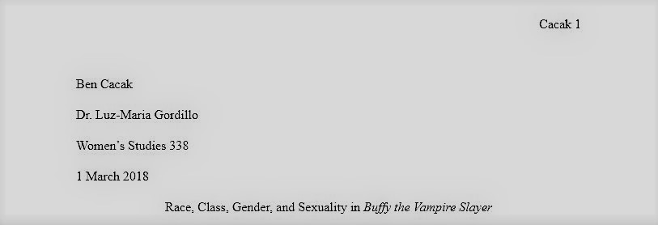

Academic Writing
This is a list of my best academic essays that I have written as a part of my course work at Washington State University.
Nick Carraway in the Queer '20s
"Nick Carraway in the Queer '20s" is a reader-respose criticism of F. Scott Fitzgerald's The Great Gatsby. I am taking a look at the queer implications in Nick Carraway's character and how it reflects the emergence of new identities during the the 1920s in New York.
Mental Illness in The Metamorphosis
In "Mental Illness in The Metamorphosis," I am performing a psychoanalytic criticism of Franz Kafka's Metamorphosis. I take a look at the paralells in Gregor Samsa's mental health and Kafka's own.
Waste and Moral Ambiguity in Conrad's Heart of Darkness
"Waste and Moral Ambiguity in Conrad's Heart of Darkness" is a postcolonial criticism I wrote about the aforementioned novella. I analyze the novella's commentary on King Leopold's colonization of The Congo.
Emphasized Femininity in Disney's Trifecta
"Emphasized Femininity in Disney's Trifecta" looks critically at messages about emphasized femininity in Walt Disney's trio of original princess films: Snow White and the Seven Dwarfs, Cinderella, and Sleeping Beauty.
Disney's Racism and the Cycle of Oppression
I analyze the films Song of the South, Mulan, and Pocahontas for hidden racist messages in the essay "Disney's Racism and the Cycle of Oppression."
Villainy and Characters of Color in Canonized Disney Cinema
In "Villainy and Characters of Color in Canonized Disney Cinema," I look at the perpetual use of characters of color as villains in popular Disney films up to the year 2000. This was a synthesis project where I developed my own ideas that were not mentioned in my sources.
Villainy and Characters of Color in Canonized Disney Cinema: Annotated Bibliography
This is my annotated bibliography for the aforementioned essay.
Wonder Woman for White Women
In "Wonder Woman for White Women," I take a look at Dr. Wlliam Moulton Marston's first editions of Wonder Woman and the racism in it. I analyze its connections to the first wave of feminism and its use of characters of color.
Race, Class, Gender, and Sexuality in Buffy the Vampire Slayer
"Race, Class, Gender, and Sexuality in Buffy the Vampire Slayer" is an intersectional analysis of messages about race, class, gender, and sexuality in Joss Whedon's hit television series Buffy the Vampire Slayer.
Being Both the Other and the Dominant
"Being Both the Other and the Dominant" is an autobiographical essay where I take an intersectional approach to my experiences growing up. I analyze how this has influenced who I am today and my power, privilege, and inequity.
Reflection and Reinforcement in Showtime's Nurse Jackie
"Reflection and Reinforcement in Showtime's Nurse Jackie" is a critical journal where I breakdown the plots in the episodes of the first season of the hit Showtime series Nurse Jackie and it is both a reflection and reinforcement of institutional oppression.